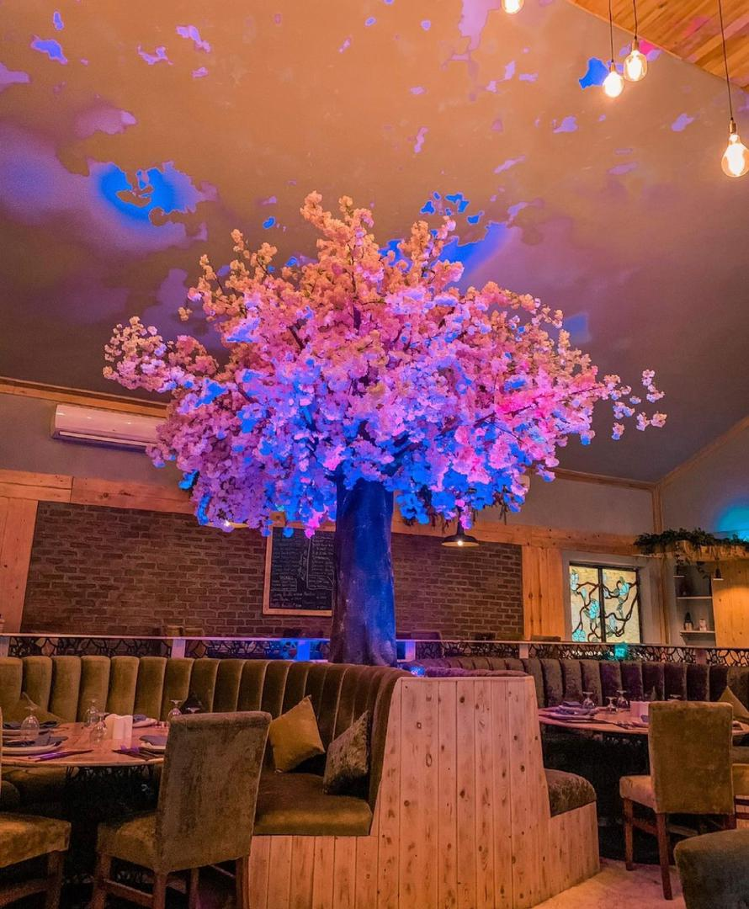

Jules. 4th december 2021. read
I knew I was going to dine out at the lagoon restaurant that evening, what I didn't know was the surprise I was in for. The lagoon restaurant is a big restaurant that brings together five different cuisines; Chinese, Continental, Indian, Brazilian(Churrasco), and Japanese (Fusion Steak house & Sushi).
When my Uber arrived at the location, the first place I noticed was Zorya, then I wondered why I haven't been to the lagoon restaurant all this while, other than being familiar with the name.
The foyer of Fusion Steakhouse & sushi was quite prominent, you can't miss it when you enter the compound. As I approached the entrance, a staff opened the door, and I was welcomed by the soft soothing music, warm lighting, and interior. I wasn't expecting the interior my eyes were blessed with, it was just beautiful. It is a wooden-minimalist design, that perfectly describes the restaurant. I can try to explain but it won't do justice, just go visit, I am confident you will love it.
I ordered Tomahawk steak, prawns, and fried rice. The chef came in with his mobile cooking tools, seeing this my phone was ready to record, lol. Preparation took between 5 - 10 mins. All the food items were laid on the table. I took a few seconds to enjoy the view before I feasted.
Tomahawk steak comes with a side of four types of mashed potatoes (that looks simple and colorful but tastes divine), sauteed onion, and grilled tomato.
Oh, and did I forget to mention that I was gifted a good wine from the chef. I enjoyed it while eating.
Please and please, spice your steak with the salt and pepper provided, it adds another spectrum of flavor to the steak.
I would recommend their Tomahawk steak any day! For me, what sets it apart from other restaurants' steaks, can be attributed to many reasons; for one, the meat is so tasty that you can literally finish it without touching the side dishes. The steak was Juicy and soft in texture, unlike most restaurants' steak that will be chewy and dry, and it is surprisingly not very oily, and you can smell the spice that is used in cooking the meat.